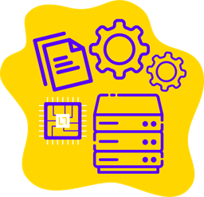
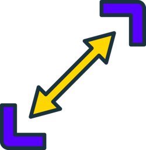
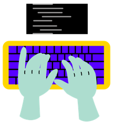
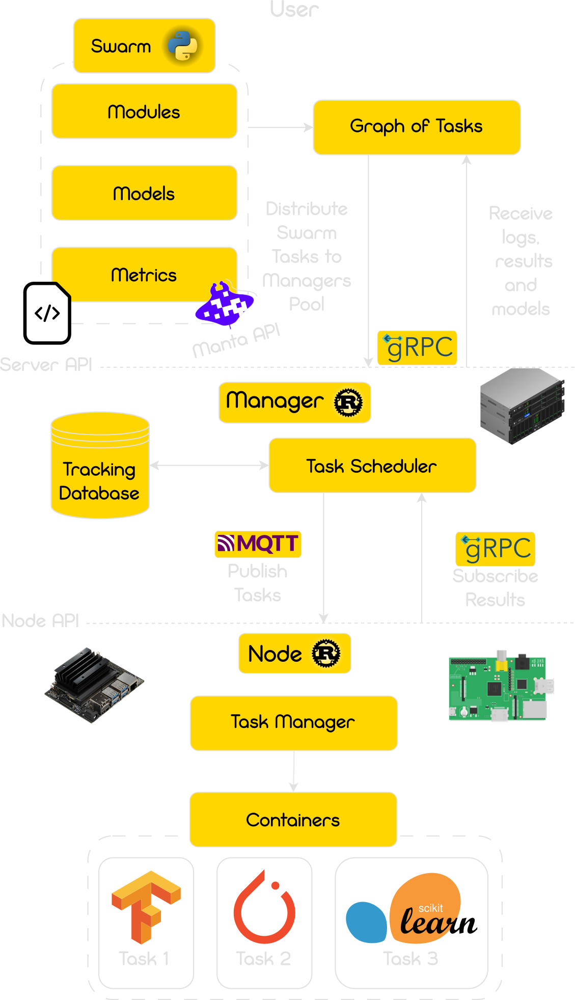

Edge Efficiency: Smarter Spending for Smarter Data
Manta focuses on redefining data processing economics. We emphasize efficient, cost-effective solutions, leveraging edge computing for economic advantage while maximizing data utility at its source.
Diving into the power of distributed data
Our cutting-edge distributed data science platform empowers businesses to harness the full potential of their decentralized data, driving innovation and efficiency in every computation
Edge Efficiency: Smarter Spending for Smarter Data
Manta focuses on redefining data processing economics. We emphasize efficient, cost-effective solutions, leveraging edge computing for economic advantage while maximizing data utility at its source.
Guardians of Data: Secure, Compliant, Traceable
Our approach centers on robust data security and adherence to compliance standards like GDPR. We prioritize maintaining data integrity, ensuring security, and offering traceable data management.
Collaborative Intelligence: Bridging Data Gaps Securely
Manta aims to facilitate secure data collaboration, breaking down corporate silos. Our focus is on fostering secure, innovative partnerships for shared data utilization, enhancing cooperative progress.

Trust in every process: Secure Data, Secure Operations
Our mission is to ensure data security and reliable operations, fostering trust with robust environments where data confidentiality and integrity are paramount.

Scale with simplicity: Extend your World with Decentralization
We focus on simplifying scalability in digital environments, offering edge computing solutions for seamless business expansion and resilient decentralized collaboration.
Operate and Monitor: Command your Digital Frontier
Manta prioritizes empowering users with tools for effective management and oversight of their digital operations, emphasizing intuitive control and monitoring.

Seamless exploration: Focus on Value, Not Complexity
Our goal is to streamline data analysis and model training, enabling professionals to focus on deriving value and innovation from their data, free from technical complexities.

CEO
Adventure enthusiast and leader.
Combines a deep technical background with a passion for ethical AI and team building.
CTO
A detail-oriented technologist.
Benjamin’s expertise lies in computer science, AI, and distributed computing.